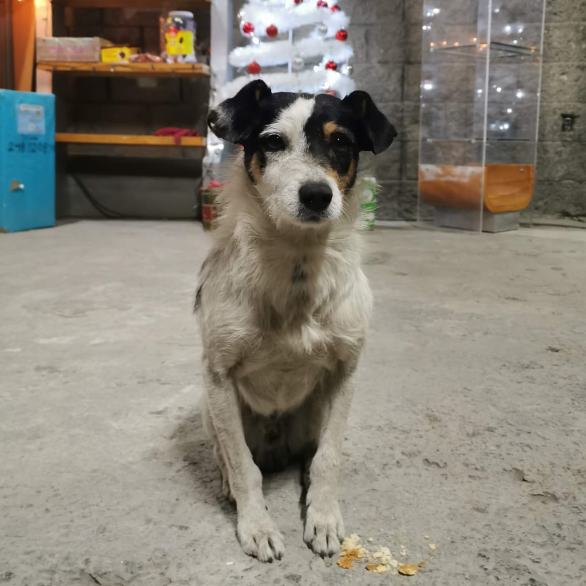

Pancho Barfero • Rescate • Nutrición • Conexión animal
Todo comenzó con un perro llamado Pancho
Soy Paty. Todo comenzó cuando Pancho apareció lastimado en el estacionamiento de Cross248. Cuidarlo me llevó a estudiar nutrición para pequeñas especies y comunicación animal.
Pancho sanó… y así nació Pancho Barfero.
La historia de Pancho
Después de Pancho comenzaron a llegar más animales al gimnasio Cross248. Algunos aparecían solos, como si supieran que ahí podían encontrar ayuda.
Con el tiempo entendí que rescatar no es suficiente. Los animales también necesitan nutrición adecuada, comprensión emocional y paciencia para sanar.
Hoy Pancho está sano y no está solo. Actualmente tengo en resguardo 6 perros y 3 gatos rescatados.
Conexión con los animales
Detrás de cada rescate hay algo más que alimento y medicina. También hay escucha. Además de estudiar nutrición para pequeñas especies, Paty practica comunicación animal mediante meditación y conexión energética.
Esto permite comprender emociones, necesidades e incluso ayudar a cerrar ciclos con animales que ya partieron. Parte de estas sesiones se utiliza para apoyar rescates y tratamientos de animales que lo necesitan.
Formas de ayudar
Comunicación animal
Si quieres comprender mejor a tu mascota o conectar con un animal que ya no está físicamente, también puedes solicitar una sesión de comunicación animal.
Estas sesiones ayudan a entender emociones, comportamientos y necesidades desde una conexión más profunda. Parte de cada sesión ayuda a sostener a los animales rescatados.
Solicitar sesiónAnimalitos que buscan hogar
Desliza y conoceAnimalitos en resguardo
Mi manada actualAnimalitos adoptados
Historias con final felizDonaciones
Haz que ayudar sea de un toque
Transferencia bancaria
Banco: BANREGIO
CLABE: 0585 9700 0018 6000 09
Depósito en Oxxo
Banregio: 4741 7451 9400 8724
Tu ayuda se transforma en:
Alimento
Medicinas
Consultas y estudios
Historias que mueven corazones
De la calle al abrazo
Cada rescate tiene historia. Mostrar el antes y después ayuda a que la gente vea el impacto real de su apoyo.
Tu ayuda sí se convierte en algo tangible
A veces una pequeña aportación cambia por completo la vida de un animal.
Adoptar también es ayudar
Cuando un cachorro encuentra hogar, se abre espacio para rescatar a otro más.
Transparencia que da confianza
Publica cada mes cuánto entró, cuánto se gastó y en qué se usó. Cuando la ayuda tiene ventana, la confianza entra sola.